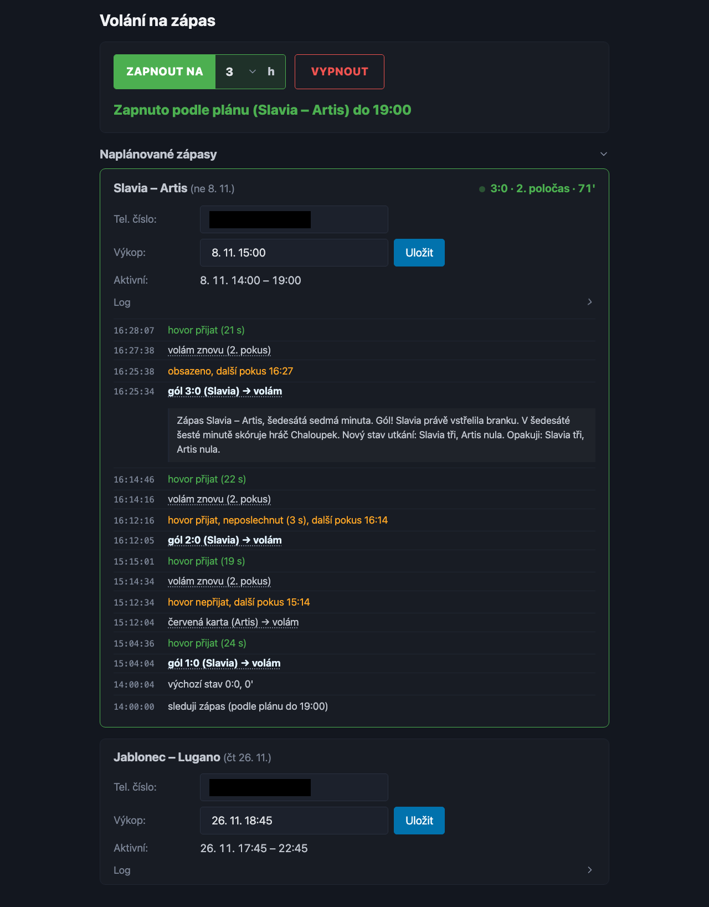

vojtah.cz
Live phone calls about goals and red cards during your team's match.
Do you have, say, a grandpa who
- loves his club dearly,
- can't make it to an away match, for example,
- can't use a smartphone, go online or read text messages, but can answer a phone call?
Then let this bot call him with the big moments of the match as they happen!
Let me know and I will set it up. For now it covers 150+ soccer leagues and the calls are in Czech, but I can easily extend it to any sport or league with live scores online.
